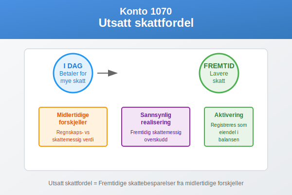
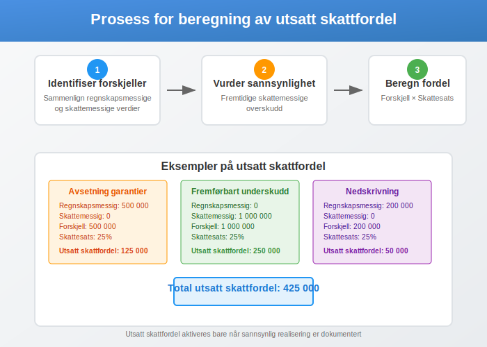
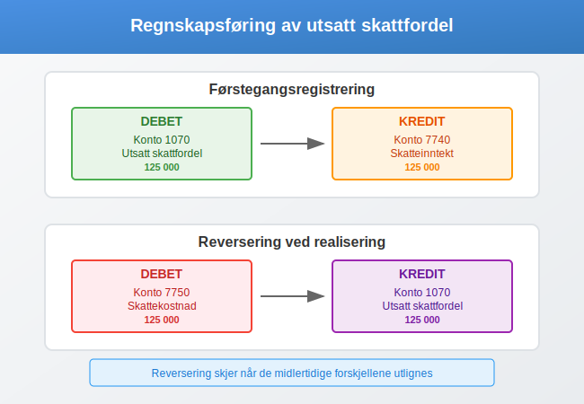
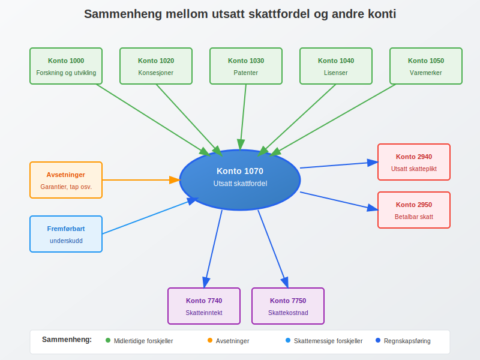

Konto 1070 - Utsatt skattfordel er en spesialisert konto som brukes for å registrere utsatt skattfordel - en immateriell eiendel som oppstår når det er midlertidige forskjeller mellom regnskapsmessige og skattemessige verdier som vil resultere i lavere fremtidig skatt. Denne kontoen er sentral for å sikre korrekt periodisering og sammenstilling av skattekostnader i balansen.

Hva er utsatt skattfordel?
Utsatt skattfordel er en regnskapsmessig eiendel som representerer fremtidige skattebesparelser som vil oppstå på grunn av midlertidige forskjeller mellom regnskapsmessige og skattemessige verdier. Denne eiendelen gjenspeiler at virksomheten har betalt for mye skatt i inneværende periode eller har skattekreditter som kan benyttes i fremtiden.
Hovedprinsipper for utsatt skattfordel
- Midlertidige forskjeller: Forskjeller mellom regnskapsmessig og skattemessig verdi som reverserer over tid
- Fremtidige skattebesparelser: Fordelen realiseres når de midlertidige forskjellene reverserer
- Aktivering: Skal bare aktiveres når det er sannsynlig at fordelen kan realiseres
Når oppstår utsatt skattfordel?
Utsatt skattfordel oppstår i følgende situasjoner:
1. Midlertidige forskjeller som gir fremtidig fradrag
- Regnskapsmessige avsetninger som ikke er skattemessig fradragsberettigede før de blir betalt
- Nedskrivninger av eiendeler som ikke er skattemessig fradragsberettigede
- Pensjonskostnader som er regnskapsmessig kostnadsført, men ikke skattemessig fradragsberettigede
2. Fremførbare skattemessige underskudd
- Skattemessige underskudd som kan fremføres til fremtidige år
- Ubenyttede skattefradrag som kan benyttes i fremtiden

Kriterier for aktivering
For at utsatt skattfordel kan aktiveres på konto 1070, må følgende kriterier være oppfylt:
Sannsynlighetskravet
| Kriterium | Beskrivelse |
|---|---|
| Sannsynlig realisering | Det må være sannsynlig at virksomheten vil ha tilstrekkelig fremtidig skattemessig overskudd til å utnytte fordelen |
| Tidsmessig sammenheng | Fordelen må kunne realiseres innenfor en rimelig tidshorisont |
| Juridisk grunnlag | Fordelen må ha lovhjemmel i gjeldende skattelovgivning |
Dokumentasjonskrav
- Beregningsgrunnlag: Detaljert beregning av midlertidige forskjeller
- Prognoser: Fremtidige inntjening og skatteposisjon
- Revidering: Regelmessig vurdering av realiserbarhet
Regnskapsføring av utsatt skattfordel
Førstegangsregistrering
Debet: Konto 1070 - Utsatt skattfordel
Kredit: Konto 7740 - Skatteinntekt
Reversering av utsatt skattfordel
Debet: Konto 7750 - Skattekostnad
Kredit: Konto 1070 - Utsatt skattfordel

Beregning av utsatt skattfordel
Grunnleggende beregning
Utsatt skattfordel = Midlertidig forskjell × Skattesats
Eksempel på beregning
| Post | Regnskapsmessig verdi | Skattemessig verdi | Midlertidig forskjell | Skattesats | Utsatt skattfordel |
|---|---|---|---|---|---|
| Avsetning garantier | 500 000 | 0 | 500 000 | 25% | 125 000 |
| Fremførbart underskudd | 0 | 1 000 000 | 1 000 000 | 25% | 250 000 |
| Total | 375 000 |
Presentasjon i regnskapet
Balanseoppstilling
Utsatt skattfordel presenteres som:
- Anleggsmiddel: Når realiseringen forventes utover 12 måneder
- Omløpsmiddel: Når realiseringen forventes innen 12 måneder
- Nettoføring: Kan nettoføres mot utsatt skatteplikt for samme skattesubjekt
Noteopplysninger
Følgende opplysninger skal gis i noter:
- Sammensetning: Spesifikasjon av hovedkomponenter
- Bevegelser: Endringer i løpet av regnskapsåret
- Sannsynlighetsvurdering: Grunnlag for aktiveringen
- Skattesats: Anvendt skattesats for beregningen
Sammenhengen med andre konti
Konto 1070 henger nært sammen med andre konti i kontoplanen:
Relaterte aktivakonti
- Konto 1000 - Forskning og utvikling: Kan ha utsatt skattfordel knyttet til FoU-fradrag
- Konto 1020 - Konsesjoner: Midlertidige forskjeller i amortisering
- Konto 1030 - Patenter: Forskjeller i avskrivningstakt
- Konto 1300 - Investeringer i datterselskaper: Midlertidige forskjeller knyttet til investeringer i datterselskaper
Tilhørende gjeldskonti
- Konto 2120 - Utsatt skatt: Periodisering av fremtidig skattekostnad
- Konto 2940 - Utsatt skatteplikt: Motsatt effekt av midlertidige forskjeller
- Konto 2950 - Betalbar skatt: Årets skattekostnad
Resultatkonti
- Konto 7740 - Skatteinntekt: Inntektsføring av utsatt skattfordel
- Konto 7750 - Skattekostnad: Kostnadsføring ved reversering
- Konto 8320 - Utsatt skatt: Skattekostnad ved endring i midlertidige forskjeller
Særlige vurderinger
Endring i skattesats
Når skattesatsen endres, må utsatt skattfordel rekalkuleres:
- Økning i skattesats: Øker verdien av utsatt skattfordel
- Reduksjon i skattesats: Reduserer verdien av utsatt skattfordel
Konsernforhold
I konsernregnskap må følgende vurderes:
- Elimineringer: Utsatt skattfordel knyttet til eliminerte poster
- Konsolidering: Nettopresentasjon på konsernnivå
- Utlandske datterselskap: Valutaomregning og lokale skatteregler

Revisjon og kontroll
Revisjonshandlinger
Revisorer vil typisk gjennomføre følgende kontroller:
- Beregningsgrunnlag: Verifisering av midlertidige forskjeller
- Sannsynlighetsvurdering: Evaluering av realiserbarhet
- Dokumentasjon: Gjennomgang av underliggende dokumentasjon
- Skattesats: Kontroll av anvendt skattesats
Vanlige feilkilder
- Overoptimistiske prognoser: For positive forventninger til fremtidig inntjening
- Feil skattesats: Bruk av feil skattesats for beregningene
- Manglende reversering: Ikke reversering når kriteriene ikke lenger er oppfylt
Internasjonale regnskapsstandarder
Forskjeller IFRS vs. NGAAP
| Område | IFRS | NGAAP |
|---|---|---|
| Sannsynlighetskriterium | Mer sannsynlig enn ikke (>50%) | Sannsynlig realisering |
| Tidsbegrensning | Ingen spesifikk tidsbegrensning | Rimelig tidshorisont |
| Underskudd | Strenge krav til fremtidig lønnsomhet | Fleksibel vurdering |
Overgangsregler
Ved overgang mellom regnskapsstandarder:
- Ny vurdering: Alle utsatte skattfordeler må revurderes
- Justeringer: Eventuelle justeringer føres mot egenkapitalen
- Dokumentasjon: Utvidet noteopplysninger kreves
Praktiske tips
Best practice
- Regelmessig vurdering: Vurder realiserbarhet minimum hvert kvartal
- Dokumentasjon: Oppretthold god dokumentasjon av alle vurderinger
- Prognoser: Bruk konservative, realistiske prognoser
- Samordning: Samordne med skatteplanlegging
Vanlige fallgruver
- Automatisk aktivering: Ikke aktiver uten grundig vurdering
- Glemte reverseringer: Husk å reversere når kriteriene ikke lenger er oppfylt
- Feil klassifisering: Sikre korrekt klassifisering som anleggs- eller omløpsmiddel
Sammendrag
Konto 1070 - Utsatt skattfordel er en kompleks, men viktig del av regnskapsføringen som krever:
- Grundig analyse av midlertidige forskjeller
- Realistisk vurdering av realiserbarhet
- Korrekt beregning og presentasjon
- Kontinuerlig oppfølging og revidering
Korrekt håndtering av utsatt skattfordel sikrer at regnskapet gir et rettvisende bilde av virksomhetens finansielle stilling og fremtidige skattesituasjon.